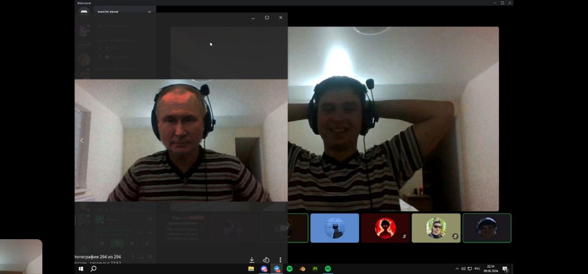
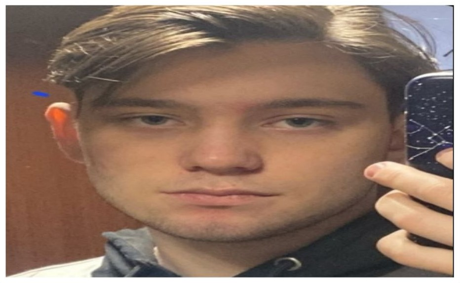
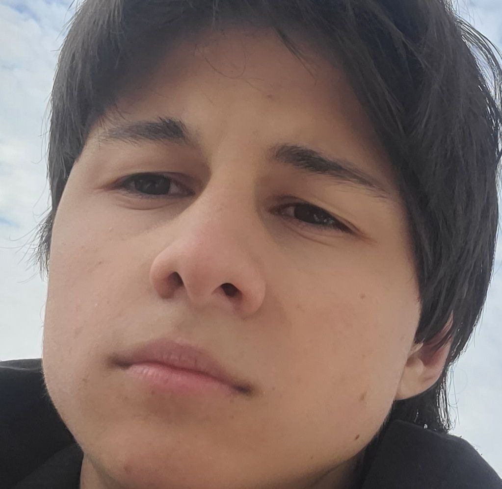

Чорнорук Роман (Зправа)
Чудовий студент. Відмінно навчається. Завжди можна поспілкуватися, поробити лабораторні.
Плаксюк Ярослав
Чудовий фронтедер, майсер екселю та просто гарна людина
Соляник Павло
Надзвичайна людина. Має найбільший потенціал стати програмістом. В цьому семестрі був помічений один раз, коли йому сказали, що буде залік.
Кашпер Ростислав
Чудовий товариш, завжди допоможе з лабораторними. Справжній експерт в Unity та С#.